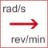

to_rpmConvert from radian per second to revolutions per minute |

|
| rs |
Type: AngularVelocity (rad/s) Description: radian per second value |
|---|
| rpm |
Type: AngularVelocity_rpm (rev/min) Description: revolutions per minute value |
|---|